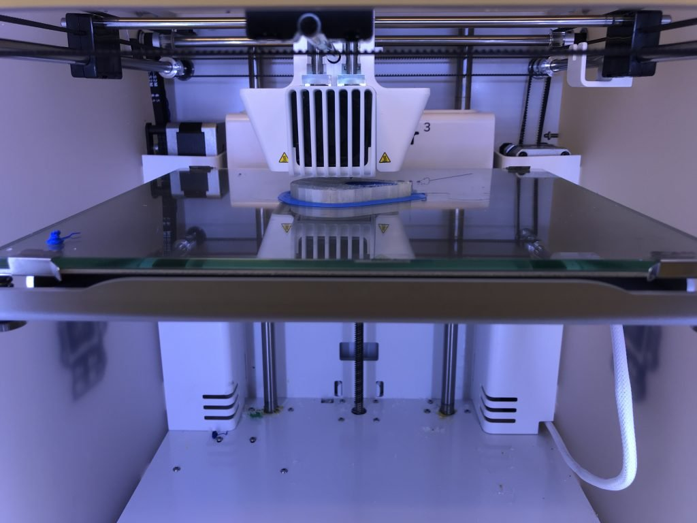
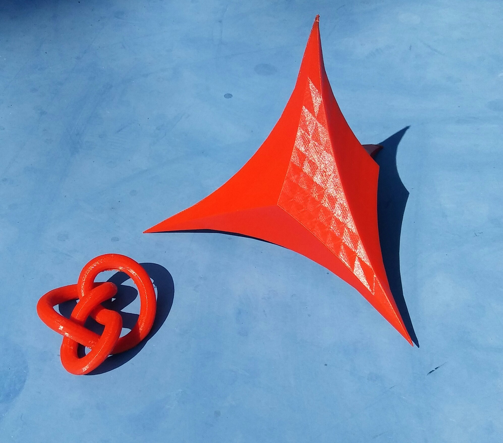

The Lab
The Lab is located in the Mathematikon, at Heidelberg University (Level -1, Room 102). It was conceived as a welcoming discussion space and workspace with cutting-edge technology: powerful computers with high resolution monitors, two 3D printers, virtual reality equipment, a laser engraver, and more. It also offers a small library, a coffee area, and a presentation space.

The Lab is staffed by several student workers that can assist you and is open to the community during opening hours.
Open hours
- Wednesdays 14:00-16:00 (current staff: Thi and Ricardo)
- Fridays 14:00-16:00 (current staff: Valentina and Dia)
Available technology
Here is a non-exhaustive list of available technology:
- Four computer workstations: two Linux workstations, one Windows, one iMac. All are equipped with multiple 4k monitors, and one computer is equipped with several GPUs for high performance and data-intensive computing.
- Two 3D printers: Ultimaker S5 Pro and Flashforge Creator 3v2
- A virtual reality set (Vive Focus 3)
- A laser engraver (Beambox)
- Two large TV monitors for presentations
- Portable devices and accessories
Books
Here are listed some nice books related to experimental mathematics and visualization. Some of them will be available at the Lab:
- Effective Computational Geometry for Curves and Surfaces (Mathematics and Visualization) by Jean-Daniel Boissonnat.
- Opt Art: From Mathematical Optimization to Visual Design by Robert Bosch (see talk at Google).
- Discrete Differential Geometry: An Applied Introduction by Keenan Crane. (link)
- Mathematics and Art: A Cultural History by Lynn Gamwell.
- Computational Drawing: From Foundational Exercises to Theories of Representation by Carl Lostritto.
- Math Art: Truth, Beauty, and Equations by Stephen Ornes.
- Lumen Naturae: visions of the abstract in art and mathematics by Matilde Marcolli.
- The Seduction of Curves: The Lines of Beauty That Connect Mathematics, Art, and the Nude by Allan McRobie.
- Generative Art: A Practical Guide Using Processing by Matt Pearson.
- Visualizing Mathematics with 3D Printing by Henry Segerman.